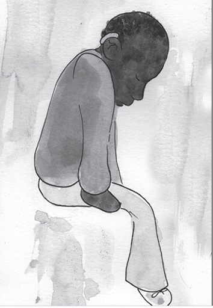
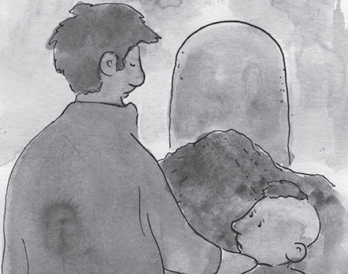
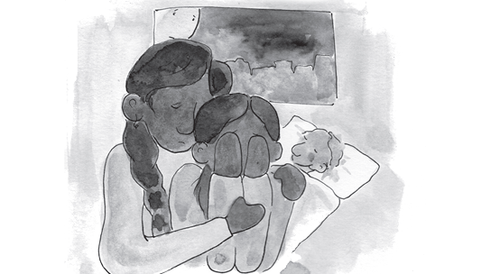

THE ARIO
INFORMATION FOR ADULTS
HOW TO DEAL WITH A BROKEN HEART?
ADULTS CAN PREPARE CHILDREN FOR LOSS
This is the most challenging CHAT. Adults have the responsibility to protect children, keep them safe and shield them the best they can from heartache. Sadly, this is not always possible. Life’s realities force adults to prepare children for how to live even when their hearts ache. Adults will leave children unprepared and alone if they skip this CHAT and avoid leading them safely through reality.

“IS IT TRUE PEOPLE CAN DIE FROM THE CORONAVIRUS?” ASKS LEILA
The difficult answer to Leila’s question, “Is it true people can die from coronavirus?” is “YES”. Children hear the voices of adults talking about the coronavirus. It is best for adults to be honest so children can trust adults to say the truth. As hard as it is, adults need to talk with children about living with death. For some people, faith and spirituality is important to help children to live with death. Adults can change this CHAT to include what is most important for your culture, traditions and religion.

